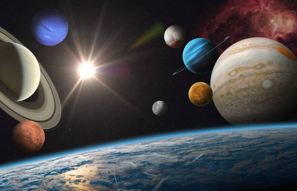
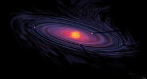

Planet
Dilansir dari Wikipedia, Planet atau sayarah adalah benda astronomi yang mengorbit sebuah bintang atau sisa bintang yang cukup besar untuk memiliki gravitasi sendiri, tidak terlalu besar untuk menciptakan fusi termonuklir, dan telah "membersihkan" daerah sekitar orbitnya yang dipenuhi planetesimal.
Kata 'planet' sudah lama ada dan memiliki hubungan sejarah, sains, mitologi, dan agama. Oleh peradaban kuno, planet dipandang sebagai sesuatu yang abadi atau perwakilan dewa. Seiring kemajuan ilmu pengetahuan, pandangan manusia terhadap planet berubah.
Pada tahun 2006, Persatuan Astronomi Internasional (IAU) mengesahkan sebuah resolusi resmi yang mendefinisikan planet di Tata Surya. Definisi ini dipuji namun juga dikritik dan masih diperdebatkan oleh sejumlah ilmuwan karena tidak mencakup benda-benda bermassa planet yang ditentukan oleh tempat atau benda orbitnya. Meski delapan benda planet yang ditemukan sebelum 1950 masih dianggap "planet" sesuai definisi modern, sejumlah benda angkasa seperti Ceres, Pallas, Juno, Vesta (masing-masing objek di sabuk asteroid Matahari), dan Pluto (objek trans-Neptunus yang pertama ditemukan) yang dulunya dianggap planet oleh komunitas ilmuwan sudah tidak dipermasalahkan lagi.
Ptolomeus menganggap planet mengelilingi Bumi dengan gerakan deferen dan episiklus. Walaupun ide planet mengelilingi Matahari sudah lama diutarakan, baru pada abad ke-17 ide ini terbukti oleh pengamatan teleskop Galileo Galilei. Dengan analisis data observasi yang cukup teliti, Johannes Kepler menemukan bahwa orbit planet tidak berbentuk lingkaran, melainkan elips. Seiring perkembangan peralatan observasi, para astronom mengamati bahwa planet berotasi pada sumbu miring dan beberapa di antaranya memiliki beting es dan musim layaknya Bumi. Sejak awal Zaman Angkasa, pengamatan jarak dekat oleh wahana antariksa membuktikan bahwa Bumi dan planet-planet lain memiliki tanda-tanda vulkanisme, badai, tektonik, dan bahkan hidrologi.
Secara umum, planet terbagi menjadi dua jenis utama: raksasa gas besar berkepadatan rendah dan raksasa darat kecil berbatu. Sesuai definisi IAU, ada delapan planet di Tata Surya. Menurut jaraknya dari Matahari (dekat ke jauh), ada empat planet kebumian, Merkurius, Venus, Bumi, dan Mars, kemudian empat raksasa gas, Jupiter, Saturnus, Uranus, dan Neptunus. Enam planet di antaranya dikelilingi oleh satu satelit alam atau lebih. Selain itu, IAU mengakui lima planet kerdil dan ratusan ribu benda kecil Tata Surya. Mereka juga masih mempertimbangkan benda-benda lain untuk digolongkan sebagai planet
Pembentukan
Belum diketahui secara pasti bagaimana planet terbentuk. Teori yang saat ini mendominasi adalah planet terbentuk saat sebuah nebula berubah menjadi cakram gas dan debu tipis. Sebuah protobintang terbentuk di intinya dan dikelilingi oleh cakram protoplanet yang berputar. Melalui akresi (proses tabrakan tempel), partikel-partikel debu di cakram perlahan mengumpulkan massa untuk membentuk benda yang jauh lebih besar. Konsentrasi massa di satu tempat disebut sebagai bentuk planetesimal dan konsentrasi tersebut mempercepat proses akresi dengan menarik material tambahan menggunakan daya tarik gravitasinya. Konsentrasi tersebut semakin padat sampai akhirnya kolaps ke dalam dan membentuk protoplanet. Setelah memiliki diameter lebih besar daripada Bulan Bumi, planet tersebut membentuk atmosfer tambahan, sehingga meningkatkan daya tarik planetesimal dengan gaya hambat atmosfer.

Ketika protobintang tumbuh begitu besar sampai bisa "menyalakan diri" menjadi bintang, cakram yang tersisa dilenyapkan dari dalam ke luar dengan fotoevaporasi, angin matahari, gaya hambat Poynting–Robertson, dan pengaruh lain. Masih banyak protoplanet yang mengelilingi bintang atau satu sama lain, namun seiring waktu sebagian besar di antaranya akan bertabrakan membentuk satu planet yang lebih besar atau melepaskan material untuk diserap protoplanet atau planet yang lebih besar. Objek-objek yang cukup besar tersebut akan menangkap sebagian materi di lingkungan orbitnya dan menjadi planet. Sementara itu, protoplanet yang berhasil menghindari tabrakan akan menjadi satelit alami planet melalui proses tangkapan gravitasi atau tetap berada di sabuk objek lain dan menjadi planet katai atau benda kecil.
Dampak energi planetesimal kecil (serta peluruhan radioaktif) akan menghangatkan planet yang sedang tumbuh, sehingga planet tersebut setidaknya setengah meleleh. Interior planet mulai berbeda-beda massanya dan menciptakan inti yang lebih padat.[79] Planet-planet kebumian yang lebih kecil kehilangan sebagian besar atmosfernya karena akresi ini, tetapi gas yang hilang bisa tergantikan oleh gas yang keluar dari mantel dan tubrukan komet (planet kecil akan kehilangan atmosfer yang diperoleh melalui berbagai jenis mekanisme pelepasan).
Objek Bermassa Planet
Objek bermassa planet, PMO, atau planemo adalah benda langit yang massanya berada di antara definisi planet: cukup besar untuk memiliki kesetimbangan hidrostatik (dikelilingi gravitasinya sendiri), tetapi tidak cukup besar untuk memiliki fusi inti layaknya sebuah bintang. Sesuai definisinya, semua planet adalah objek bermassa planet, namun tujuan istilah tersebut adalah menjelaskan benda-benda yang tidak memenuhi syarat planet pada umumnya. Objek-objek tersebut adalah planet katai, satelit yang lebih besar, planet pengelana bebas yang tidak mengorbit bintang seperti planet liar yang terlempar dari sistemnya, dan objek yang terbentuk melalui kolaps awan alih-alih akresi (kadang disebut katai subcokelat).
Planet Liar
Beberapa simulasi komputer pembentukan sistem bintang dan planet mengungkapkan bahwa sejumlah benda bermassa planet akan terlempar ke angkasa antarbintang. Beberapa ilmuwan berpendapat bahwa benda semacam itu yang ditemukan berkelana di angkasa harus dikelompokkan sebagai "planet", tetapi yang lainnya berpendapat itu bisa jadi bintang bermassa rendah.
Katai Subcokelat
Bintang terbentuk melalui keruntuhan gravitasi awan gas, tetapi benda-benda yang lebih kecil bisa terbentuk melalui keruntuhan awan. Objek bermassa planet yang terbentuk seperti itu kadang disebut katai subcokelat. Katai subcokelat bisa berkelana bebas (contohnya Cha 110913-773444) atau mengorbit benda yang lebih besar (contohnya 2MASS J04414489+2301513).
Pada tahun 2006, komunitas astronom sempat percaya bahwa mereka menemukan sistem biner katai subcokelat, Oph 162225-240515, yang disebut penemunya sebagai "planemo" atau "objek bermassa planet". Namun analisis terkini menetapkan bahwa massa mereka masing-masing mungkin lebih besar daripada benda bermassa 13 kali Jupiter, sehingga keduanya tergolong katai cokelat.
Bekas Bintang
Di sistem bintang biner dekat, salah satu bintang bisa kehilangan massanya karena diserap bintang yang lebih berat (lihat pulsar bertenaga akresi). Bintang yang menyusut berubah menjadi objek bermassa planet. Contohnya adalah sebuah objek bermassa Jupiter yang mengorbit pulsar PSR J1719-1438.
Planet Satelit dan Planet sabuk
Beberapa satelit besar memiliki ukuran yang sama atau lebih besar daripada Merkurius, misalnya satelit Galileo dan Titan Jupiter. Alan Stern berpendapat bahwa lokasi bukanlah masalah dan ciri-ciri geofisik saja yang perlu dipertimbangkan dalam definisi planet. Ia mengusulkan istilah planet satelit untuk satelit berukuran planet. Sama halnya, planet-planet kerdil di sabuk asteroid dan sabuk Kuiper harus dianggap planet menurut Stern.